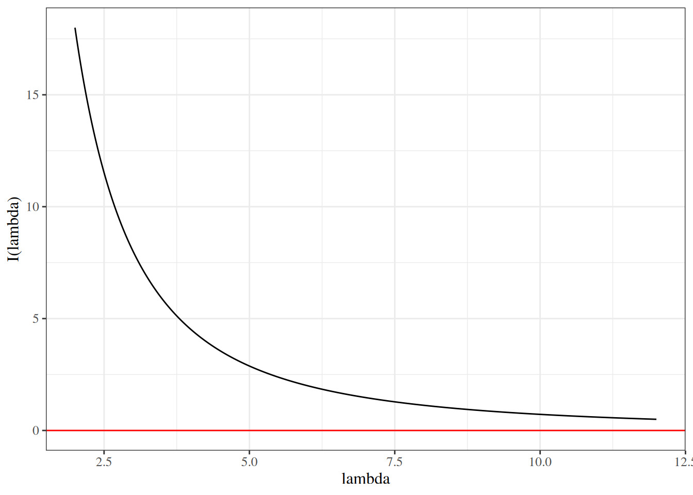
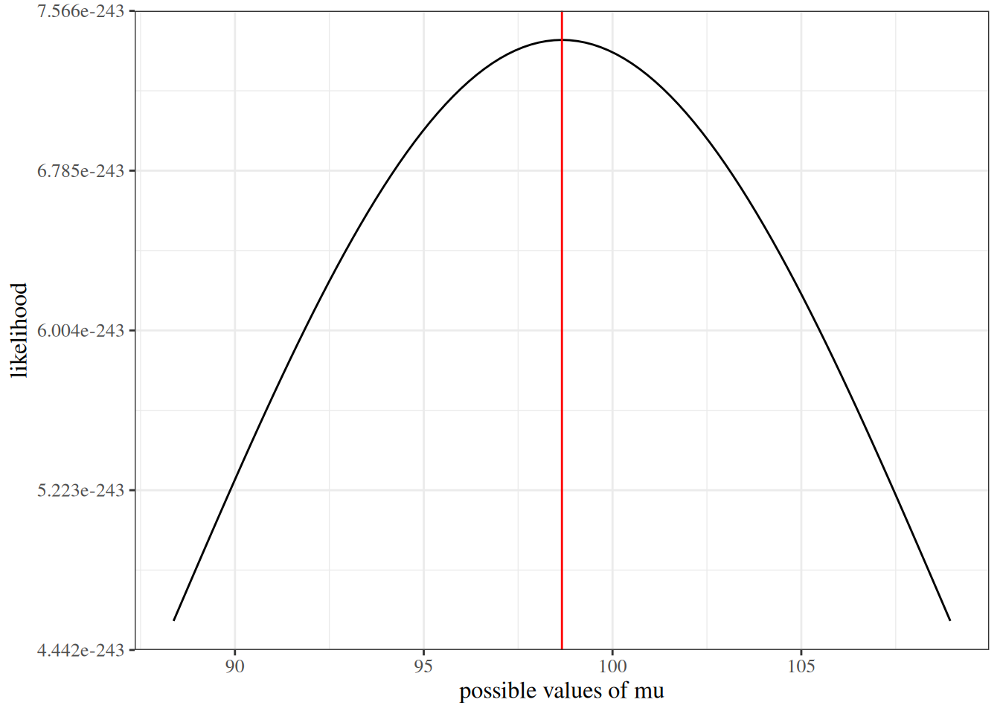
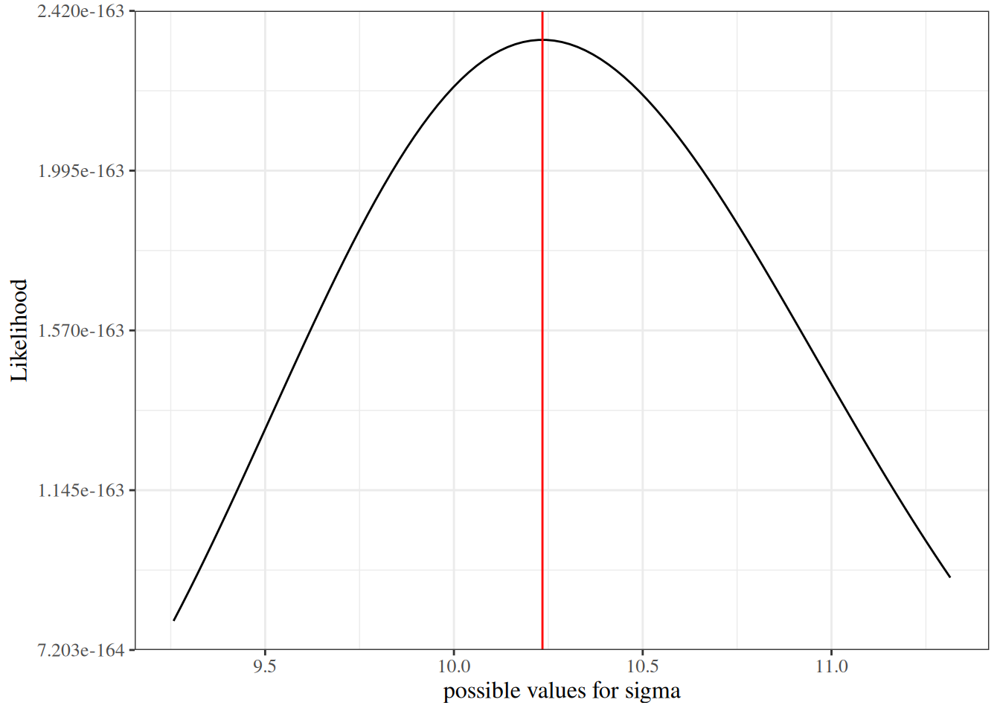

Definition F.1 (Likelihood of a single observation) Let \(X\) be a random variable and let \(x\) be \(X\)’s observed data value. Let \(\text{p}_{\Theta}(X=x)\) be a probability model for the distribution of \(X\), with parameter vector \(\Theta\).
Then the likelihood of parameter value \(\theta\), for model \(\text{p}_{\Theta}(X=x)\) and data \(X = x\), is simply the probability of the event \(X=x\) given \(\Theta= \theta\):
Definition F.2 (Likelihood of a dataset) Let \(\tilde{x} \stackrel{\text{def}}{=}x_1, \ldots, x_n\) be a dataset with corresponding random variable \(\tilde{X}\). Let \(\text{p}_{\Theta}(\tilde{X})\) be a probability model for the distribution of \(\tilde{X}\) with unknown parameter vector \(\Theta\).
Then the likelihood of parameter value \(\theta\), for model \(\text{p}_{\Theta}(X)\) and data \(\tilde{X}= \tilde{x}\), is the joint probability of \(\tilde{X}= \tilde{x}\) given \(\Theta= \theta\):
The likelihood is a function that takes \(\theta\) (and implicitly, \(\tilde{X}\)) as inputs and outputs a single number, the joint probability of \(\tilde{x}\) for model \(p_\Theta(\tilde{X}=\tilde{x})\) with \(\Theta = \theta\).
Theorem F.1 (Likelihood of an independent sample) For mutually independent data \(X_1, ..., X_n\):
Proof. \[
\begin{aligned}
\mathcal{L}(\tilde{x}|\theta)
&\stackrel{\text{def}}{=}\text{p}(X_1 = x_1, …,X_n =x_n|\theta)
\\&= \prod_{i=1}^n \text{p}(X_i=x_i|\theta)
\end{aligned}
\] The second equality is by the definition of statistical independence.
Definition F.3 (Likelihood components) Given an \(\text{iid}\) dataset \(\tilde{x}\), the likelihood component or likelihood factor of observation \(X_i=x_i\) is the marginal likelihood of \(X_i=x_i\):
\[\mathcal{L}_i(\theta) = \text{P}(X_i=x_i)\]
Theorem F.2 For \(\text{iid}\) data \(\tilde{x}\stackrel{\text{def}}{=}x_1, \ldots, x_n\), the likelihood of the dataset is equal to the product of the observation-specific likelihood factors:
Definition F.4 (Maximum likelihood estimate) The maximum likelihood estimate of a parameter vector \(\Theta\), denoted \(\hat\theta_{\text{ML}}\), is the value of \(\Theta\) that maximizes the likelihood:
Recall from calculus: the maxima of a continuous function \(f(x)\) over a range of input values \(\mathcal{R}(x)\) can be found either:
at the edges of the range of input values, OR:
where the function is flat (i.e. where the gradient function \(f'(x) = 0\)) AND the second derivative is negative definite (\(f''(x) < 0\)).
F.1.4 Directly maximizing the likelihood function for iid data
To find the maximizer(s) of the likelihood function, we need to solve \(\mathcal{L}'(\theta) = 0\) for \(\theta\). However, even for mutually independent data, we quickly run into a problem:
The derivative of the likelihood of independent data is the derivative of a product. We will have to perform a massive application of the product rule to evaluate this derivative.
F.1.5 The log-likelihood function
It is typically easier to work with the log of the likelihood function:
Definition F.5 (Log-likelihood) The log-likelihood of parameter value \(\theta\), for model \(\text{p}_{\Theta}(\tilde{X})\) and data \(\tilde{X}= \tilde{x}\), is the natural logarithm of the likelihood1:
Definition F.6 (Log-likelihood components) Given a dataset \(\tilde{X}= \tilde{x}\), the log-likelihood component of observation \(X_i=x_i\) is the natural logarithm of the likelihood component:
The first derivative2 of the log-likelihood, \(\ell'(\theta)\), is important enough to have its own name: the score function.
Definition F.7 (Score function) The score function of a statistical model \(\text{p}(\tilde{X}=\tilde{x})\) is the gradient (i.e., first derivative) of the log-likelihood of that model:
We often skip writing the arguments \(x\) and/or \(\theta)\), so \(\ell' \stackrel{\text{def}}{=}\ell'(\tilde{x};\theta) \stackrel{\text{def}}{=}\ell'(\theta)\).3 Some statisticians use \(U\) or \(S\) instead of \(\ell'\). I prefer \(\ell'\). Why use up extra letters?
F.1.7 Asymptotic distribution of the maximum likelihood estimate
We learned how to quantify our uncertainty about these maximum likelihood estimates; with sufficient sample size, \(\hat\theta_{\text{ML}}\) has an approximately Gaussian distribution (Newey and McFadden 1994):
The variance of \(\ell'(x,\theta)\), \({Cov}\left\{ \ell'(x,\theta) \right\}\), is also very important; we call it the “expected information matrix”, “Fisher information matrix”, or just “information matrix”, and we represent it using the symbol \(\mathcal{I}\left(I\right)\) (\frakturI in Unicode, \mathfrak{I} in LaTeX).
Note that \(\mathbb{E}\left[\ell'\right]\) and \(\mathbb{E}\left[\ell'{\ell'}^{\top}\right]\) are functions of \(\theta\) but not of \(x\); the expectation operator removed \(x\).
Also note that for most of the distributions you are familiar with (including Gaussian, binomial, Poisson, exponential):
\[\ell_{ij}'' \stackrel{\text{def}}{=}\frac{\partial}{\partial \theta_{i}}\frac{\partial}{\partial \theta_{j}}\text{log}\left\{ p\left( X = x \mid \theta \right)\right\}\]
\(\ell''\) is called the “Hessian”4 of the log-likelihood function.
Sometimes, we use \(I(\theta;x) \stackrel{\text{def}}{=}- \ell''\) (note the standard-font “I” here). \(I(\theta;x)\) is the observed information, precision, or concentration matrix (Negative Hessian).
Key point
The asymptotics of MLEs gives us \({\widehat{\theta}}_{ML} \sim N\left( \theta,\mathfrak{I}^{- 1}(\theta) \right)\), approximately, for large sample sizes.
We can estimate \(\mathcal{I}^{- 1}(\theta)\) by working out \(\mathbb{E}\left[-\ell''\right]\) or \(\mathbb{E}\left[\ell'{\ell'}^{\top}\right]\) and plugging in \(\hat\theta_{\text{ML}}\), but sometimes we instead use \(I(\hat\theta_{\text{ML}},\tilde{x})\) for convenience; there are some cases where it’s provably better according to some criteria (Efron and Hinkley (1978)).
The approximate score function, \(\ell'^*(\theta)\), is a linear function of \(\theta\), so it is easy to solve the corresponding approximate score equation, \(\ell'^*(\theta) = 0\), for \(\theta\):
For computational simplicity, we will sometimes use \(\mathfrak{I}^{- 1}(\theta)\) in place of \(I\left( \widehat{\theta},y \right)\); doing so is called “Fisher scoring” or the “method of scoring”. Note that this is the opposite of the substitution that we are making for estimating the variance of the MLE; this time we should technically use the observed information but we use the expected information instead.
There’s also an “empirical information matrix” (see McLachlan and Krishnan (2007)):
Where \(m\) is the sample size of the new data to be predicted (typically 1, except for binary outcomes, where it needs to be bigger for prediction intervals to make sense)
F.2 Example: Maximum likelihood for Tropical Cyclones in Australia
The cyclones dataset in the dobson package (Table F.1) records the number of tropical cyclones in Northeastern Australia during 13 November-to-April cyclone seasons (more details in Dobson and Barnett (2018) §1.6.5 and help(cyclones, package = "dobson")). Figure F.1 graphs the number of cyclones (y-axis) by season (x-axis). Let’s use \(Y_i\) to represent these counts, where \(i\) is an indexing variable for the seasons and \(Y_i\) is the number of cyclones in season \(i\).
F.2.2 Exploratory analysis
Suppose we want to learn about how many cyclones to expect per season.
Figure F.1: Number of tropical cyclones per season in northeastern Australia, 1956-1969
There’s no obvious correlation between adjacent seasons, so let’s assume that each season is independent of the others.
Let’s also assume that they are identically distributed; let’s denote this distribution as \(P(Y=y)\). Note that there’s no index \(i\) in this expression, since we are assuming the \(Y_i\)s are identically distributed.
We can visualize the distribution using a bar plot (Figure F.2).
We want to estimate \(P(Y=y)\); that is, \(P(Y=y)\) is our estimand.
We could estimate \(P(Y=y)\) for each value of \(y\) in \(0:\infty\) separately (“nonparametrically”) using the fraction of our data with \(Y_i=y\), but then we would be estimating an infinitely large set of parameters, and we would have low precision. We will probably do better with a parametric model.
Exercise F.1 What parametric probability distribution family might we use to model this empirical distribution?
Solution. Let’s use the Poisson. The Poisson distribution is appropriate for this data , because the data are counts that could theoretically take any integer value (discrete) in the range \(0:\infty\). Visually, the plot of our data closely resembles a Poisson or binomial distribution. Since cyclones do not have an “upper limit” on the number of events we could potentially observe in one season, the Poisson distribution is more appropriate than the binomial.
Exercise F.2 Write down the Poisson distribution’s probability mass function.
F.2.4 Estimating the model parameters using maximum likelihood
Now, we can estimate the parameter \(\lambda\) for this distribution using maximum likelihood estimation.
Exercise F.3 (What is the likelihood?) Write down the likelihood (probability mass function or probability density function) of a single observation \(x\), according to your model.
Exercise F.4 Write down the vector of parameters in your model.
Solution. There is only one parameter, \(\lambda\):
\[\theta = (\lambda)\]
Exercise F.5 Write down the population mean and variance of a single observation from your chosen probability model, as a function of the parameters (extra credit - derive them).
Solution.
Population mean: \(\text{E}[X]=\lambda\)
Population variance: \(\text{Var}(X)=\lambda\)
Exercise F.6 Write down the likelihood of the full dataset.
score<-function(lambda, y=cyclones$number, n=length(y)){(sum(y)/lambda)-n}ggplot()+geom_function(fun =score, n =1001)+xlim(min(cyclones$number), max(cyclones$number))+ylab("l'(lambda)")+xlab("lambda")+geom_hline(yintercept =0, col ="red")
Figure F.5: score function of Dobson cyclone data
The Hessian matrix
Exercise F.12 Derive the Hessian matrix.
Solution. The Hessian function for an iid sample is the 2nd derivative(s) of the log-likelihood:
hessian<-function(lambda, y=cyclones$number, n=length(y)){-sum(y)/(lambda^2)}ggplot()+geom_function(fun =hessian, n =1001)+xlim(min(cyclones$number), max(cyclones$number))+ylab("l''(lambda)")+xlab("lambda")+geom_hline(yintercept =0, col ="red")
Figure F.6: Hessian function of Dobson cyclone data
Exercise F.14 Write the score equation (estimating equation).
Solution. \[\ell'( \lambda; \tilde{x} ) = 0\]
F.2.5 Finding the MLE analytically
In this case, we can find the MLE of \(\lambda\) by solving the score equation for \(\lambda\) analytically (using algebra):
Exercise F.15 Solve the estimating equation for \(\lambda\):
Exercise F.17 Draw conclusions about the MLE of \(\lambda\).
Solution. Since \(\ell''(\tilde \lambda; \tilde{x})<0\), \(\tilde \lambda\) is at least a local maximizer of the likelihood function \(\mathcal L(\lambda)\). Since there is only one solution to the estimating equation and the Hessian is negative definite everywhere, \(\tilde \lambda\) must also be the global maximizer of \(\mathcal L(\lambda; \tilde{x})\):
Figure F.7: log-likelihood of Dobson cyclone data with MLE
Information matrices
Show R code
obs_inf<-function(...)-hessian(...)ggplot()+geom_function(fun =obs_inf, n =1001)+xlim(min(cyclones$number), max(cyclones$number))+ylab("I(lambda)")+xlab("lambda")+geom_hline(yintercept =0, col ="red")
Figure F.8: Observed information function of Dobson cyclone data

F.2.6 Finding the MLE using the Newton-Raphson algorithm
Example F.1 (Finding the MLE using the Newton-Raphson algorithm)
We found that the MLE was \(\hat{\lambda} = \bar{x}\), by solving the score equation \(\ell'(\lambda)=0\) for \(\lambda\).
What if we hadn’t been able to solve the score equation?
Then we could start with some initial guess \({\widehat{\lambda}}^*\), such as \({\widehat{\lambda}}^*= 3\), and use the Newton-Raphson algorithm.
Show R code
# specify initial guess:cur_lambda_est<-3
In Exercise F.10, we found that the score function was:
Figure F.9 compares the true score function and the approximate score function at \({\widehat{\lambda}}^*= 3\).
Show R code
approx_score<-function(lambda, lhat, ...){score(lambda =lhat, ...)+hessian(lambda =lhat, ...)*(lambda-lhat)}point_size<-5plot1<-ggplot()+geom_function( fun =score,aes(col ="true score function"), n =1001)+geom_function( fun =approx_score,aes(col ="approximate score function"), n =1001, args =list(lhat =cur_lambda_est))+geom_point( size =point_size,aes( x =cur_lambda_est, y =score(lambda =cur_lambda_est), col ="current estimate"))+geom_point( size =point_size,aes( x =xbar, y =0, col ="true MLE"))+xlim(min(cyclones$number), max(cyclones$number))+ylab("l'(lambda)")+xlab("lambda")+geom_hline(yintercept =0)print(plot1)
Figure F.9: Score function of Dobson cyclone data and approximate score function
This is equivalent to estimating the log-likelihood with a second-order Taylor polynomial:
approx_loglik<-function(lambda, lhat, ...){loglik(lambda =lhat, ...)+score(lambda =lhat, ...)*(lambda-lhat)+1/2*hessian(lambda =lhat, ...)*(lambda-lhat)^2}plot_loglik<-ggplot()+geom_function( fun =loglik,aes(col ="true log-likelihood"), n =1001)+geom_function( fun =approx_loglik,aes(col ="approximate log-likelihood"), n =1001, args =list(lhat =cur_lambda_est))+geom_point( size =point_size,aes( x =cur_lambda_est, y =loglik(lambda =cur_lambda_est), col ="current estimate"))+geom_point( size =point_size,aes( x =xbar, y =loglik(xbar), col ="true MLE"))+xlim(min(cyclones$number)-1, max(cyclones$number))+ylab("l'(lambda)")+xlab("lambda")print(plot_loglik)
Figure F.10: log-likelihood of Dobson cyclone data and approximate log-likelihood function
The approximate score function, \(\ell'^*(\lambda)\), is a linear function of \(\lambda\), so it is easy to solve the corresponding approximate score equation, \(\ell'^*(\lambda) = 0\), for \(\lambda\):
plot2<-plot1+geom_point( size =point_size,aes( x =new_lambda_est, y =0, col ="new estimate"))+geom_segment( arrow =grid::arrow(), linewidth =2, alpha =.7,aes( x =cur_lambda_est, y =approx_score( lhat =cur_lambda_est, lambda =cur_lambda_est), xend =new_lambda_est, yend =0, col ="update"))print(plot2)
Figure F.11: score function of Dobson cyclone data and approximate score function
So we update \({\widehat{\lambda}}^*\leftarrow 4.375\) and repeat our estimation process:
Show R code
plot2+geom_function( fun =approx_score,aes(col ="new approximate score function"), n =1001, args =list(lhat =new_lambda_est))+geom_point( size =point_size,aes( x =new_lambda_est, y =score(lambda =new_lambda_est), col ="new estimate"))
Figure F.12: score function of Dobson cyclone data and approximate score function
We repeat this process until the likelihood converges:
ll_plot+geom_segment( data =NR_info, arrow =grid::arrow(), alpha =.7,aes( x =lambda, xend =lead(lambda), y =`log(likelihood)`, yend =lead(`log(likelihood)`), col =factor(iteration)))
Figure F.13: Newton-Raphson algorithm for finding MLE of model F.6 for cyclone data
F.3 Maximum likelihood inference for univariate Gaussian models
Suppose \(X_{1}, ..., X_{n} \ \sim_{\text{iid}}\ N(\mu, \sigma^{2})\). Let \(X = (X_{1},\ldots,X_{n})^{\top}\) be these random variables in vector format. Let \(x_{i}\) and \(x\) denote the corresponding observed data. Then \(\theta = (\mu,\sigma^{2})\) is the vector of true parameters, and \(\Theta = (\text{M}, \Sigma^2)\) is the vector of parameters as a random vector.
When solving for \({\widehat{\sigma}}_{ML}\), you can treat \(\sigma^{2}\) as an atomic variable (don’t differentiate with respect to \(\sigma\) or things get messy). In fact, you can replace \(\sigma^{2}\) with \(1/\tau\) and differentiate with respect to \(\tau\) instead, and the process might be even easier.
See Casella and Berger (2002) p322, example 7.2.12.
To prove it’s a maximum, we need:
\(\ell' = 0\)
At least one diagonal element of \(\ell''\) is negative.
Determinant of \(\ell''\) is positive.
F.4 Example: hormone therapy study
Now, we’re going to analyze some real-world data using a Gaussian model, and then we’re going to do a simulation to examine the properties of maximum likelihood estimation for that Gaussian model.
Here we look at the “heart and estrogen/progestin study” (HERS), a clinical trial of hormone therapy for prevention of recurrent heart attacks and death among 2,763 post-menopausal women with existing coronary heart disease (CHD) (Hulley et al. 1998).
We are going to model the distribution of fasting glucose among non-diabetics who don’t exercise.
Show R code
# load the data directly from a UCSF websitehers<-haven::read_dta(paste0(# I'm breaking up the url into two chunks for readability"https://regression.ucsf.edu/sites/g/files","/tkssra6706/f/wysiwyg/home/data/hersdata.dta"))
Here’s the estimated distribution, superimposed on our histogram:
Show R code
plot1+geom_function( fun =function(x)dnorm(x, mean =mu_hat, sd =sqrt(sigma_sq_hat)), col ="red")
Looks like a somewhat decent fit? We could probably do better, but that’s for another time.
F.4.2 Construct the likelihood and log-likelihood functions
it’s often computationally more effective to construct the log-likelihood first and then exponentiate it to get the likelihood
Show R code
loglik<-function(mu, # I'm assigning default values, which the function will use# unless we tell it otherwisesigma=sd(x), # note that you can define some default inputs# based on other argumentsx=glucose_data,n=length(x)){normalizing_constants<--n/2*log((sigma^2)*2*pi)likelihood_kernel<--1/(2*sigma^2)*{# I have to do this part in a somewhat complicated way# so that we can pass in vectors of possible values of mu# and get the likelihood for each value;# for the binomial case it's easiersum(x^2)-2*sum(x)*mu+n*mu^2}answer<-normalizing_constants+likelihood_kernelreturn(answer)}# `...` means pass any inputs to lik() along to loglik()lik<-function(...)exp(loglik(...))
F.4.3 Graph the Likelihood as a function of \(\mu\)
(fixing \(\sigma^2\) at \(\hat\sigma^2 = 104.7444\))
Show R code
ggplot()+geom_function(fun =function(x)lik(mu =x, sigma =sigma_sq_hat))+xlim(mean(glucose_data)+c(-1, 1)*sd(glucose_data))+xlab("possible values of mu")+ylab("likelihood")+geom_vline(xintercept =mean(glucose_data), col ="red")

F.4.4 Graph the Log-likelihood as a function of \(\mu\)
(fixing \(\sigma^2\) at \(\hat\sigma^2 = 104.7444\))
Show R code
ggplot()+geom_function(fun =function(x)loglik(mu =x, sigma =sigma_sq_hat))+xlim(mean(glucose_data)+c(-1, 1)*sd(glucose_data))+xlab("possible values of mu")+ylab("log(likelihood)")+geom_vline(xintercept =mean(glucose_data), col ="red")
F.4.5 Likelihood and log-likelihood for \(\sigma\), conditional on \(\mu = \hat\mu\):
Show R code
ggplot()+geom_function(fun =function(x)lik(sigma =x, mu =mean(glucose_data)))+xlim(sd(glucose_data)*c(.9, 1.1))+geom_vline( xintercept =sd(glucose_data)*sqrt(n_obs-1)/sqrt(n_obs), col ="red")+xlab("possible values for sigma")+ylab("Likelihood")

Show R code
ggplot()+geom_function( fun =function(x)loglik(sigma =x, mu =mean(glucose_data)))+xlim(sd(glucose_data)*c(0.9, 1.1))+geom_vline( xintercept =sd(glucose_data)*sqrt(n_obs-1)/sqrt(n_obs), col ="red")+xlab("possible values for sigma")+ylab("log(likelihood)")
F.4.6 Standard errors by sample size:
Recall from Section F.3.4 that the asymptotic standard error of \({\widehat{\mu}}_{ML}\) is \(\widehat{\text{SE}}\left({\widehat{\mu}}\right) = \sqrt{\left[\left(\hat{\mathcal{I}}\left(\widehat{\mu}_{ML}\right)\right)^{-1}\right]} = \frac{\hat{\sigma}}{\sqrt{n}}\)
For example, suppose we wish to detect a difference from the hypothesized value \(\mu_0 = 95\). We reject the null hypothesis for any mean value outside the “non-rejection interval” \[ \mu_0 \pm F^{-1}_{t(n-1)}(1-\alpha/2) \sqrt{\frac{\sigma^2}{n}} \]
In this case, the non-rejection interval is \([92.959, 97.041]\).
Calculate power under a simple alternative
Consider the simple alternative that the true value is actually the estimated mean calculated from the data (i.e. \(98.66\)). Let’s also assume that the known standard deviation is what we estimated from the data.
power<-function(n=100, null=95, alt=98.66){# there's no such thing as fractional sample size:n<-floor(n)# using the function we wrote earlier:se<-se_mu_hat(n =n)reject_upper<-((null+qt(0.975, df =n-1)*se)-alt)/sereject_lower<-((null-qt(0.975, df =n-1)*se)-alt)/sep_reject_high<-pt( q =reject_lower, df =n-1)p_reject_low<-pt( q =reject_upper, df =n-1, lower =FALSE)p_reject<-p_reject_high+p_reject_lowreturn(p_reject)}power_plot<-ggplot()+geom_function(fun =power, n =100)+xlim(c(2, 200))+# n = 1 is not allowed for t-distributionylim(0, 1)+ylab("Power")+xlab("n")+theme_bw()print(power_plot)
F.4.8 Simulations
Create simulation framework
Here’s a function that performs a single simulation of a Gaussian modeling analysis:
Show R code
do_one_sim<-function(n=100,mu=mean(glucose_data),mu_0=mean(glucose_data)*0.9,sigma2=var(glucose_data),return_data=FALSE# if this is set to true, we will create a list() # containing both the analytic results and the vector of simulated data){# generate datax<-rnorm(n =100, mean =mu, sd =sqrt(sigma2))# analyze datamu_hat<-mean(x)sigmahat<-sd(x)se_hat<-sigmahat/sqrt(n)confint<-mu_hat+c(-1, 1)*se_hat*qt(.975, df =n-1)tstat<-abs(mu_hat-mu_0)/se_hatpval<-pt(df =n-1, q =tstat, lower =FALSE)*2confint_covers<-between(mu, confint[1], confint[2])test_rejects<-pval<0.05# if you want spaces, hyphens, or characters in your column names, # use "", '', or ``:to_return<-tibble("mu-hat"=mu_hat,"sigma-hat"=sigmahat,"se_hat"=se_hat,"confint_left"=confint[1],"confint_right"=confint[2],"tstat"=tstat,"pval"=pval,"confint covers true mu"=confint_covers,"test rejects null hypothesis"=test_rejects)if(return_data){return(list( data =x, results =to_return))}else{return(to_return)}}
Let’s see what this function outputs for us:
Show R code
do_one_sim()
Looks good!
Now let’s check it against the t.test() function from the stats package:
Here’s a function that calls the previous function n_sims times and summarizes the results:
Show R code
do_n_sims<-function(n_sims=1000,...# this symbol means "allow additional arguments to be passed on to the # `do_sim_once` function){sim_results<-NULL# we're going to create a "tibble" of results,# row by row (slightly different from the hint on the homework)for(iin1:n_sims){set.seed(i)# sets a different seed for each simulation iteration, # to get a different dataset each timecurrent_results<-do_one_sim(...)|># here's where the simulation actually gets runmutate( sim_number =i)|>relocate("sim_number", .before =everything())sim_results<-sim_results|>bind_rows(current_results)}return(sim_results)}
Show R code
sim_results<-do_n_sims( n_sims =1000, mu =mean(glucose_data), sigma2 =var(glucose_data), n =100# this is the number of samples per simulated data set)sim_results
The simulation results are in! Now we have to analyze them.
Analyze simulation results
To do that, we write another function:
Show R code
summarize_sim<-function(sim_results,mu=mean(glucose_data),sigma2=var(glucose_data),n=100){# calculate the true standard error based on the data-generating parameters:se_mu_hat<-sqrt(sigma2/n)sim_results|>summarize( `bias[mu-hat]` =mean(.data$`mu-hat`)-mu, `SE(mu-hat)` =sd(.data$`mu-hat`), `bias[SE-hat]` =mean(.data$se_hat)-se_mu_hat, `SE(SE-hat)` =sd(.data$se_hat), coverage =mean(.data$`confint covers true mu`), power =mean(.data$`test rejects null hypothesis`))}
Let’s try it out:
Show R code
sim_summary<-summarize_sim(sim_results, mu =mean(glucose_data),# this function needs to know the true parameter values in order to assess # bias sigma2 =var(glucose_data), n =100)sim_summary
From this simulation, we observe that our estimate of \(\mu\), \(\hat\mu\), has minimal bias, and so does our estimate of \(SE(\hat\mu)\), \(\hat{SE}(\hat\mu)\).
The confidence intervals captured the true value even more often than they were supposed to, and the hypothesis test always rejected the null hypothesis.
I wonder what would happen with a different sample size, a different true \(\mu\) value, or a different \(\sigma^2\) value…
Dobson, Annette J, and Adrian G Barnett. 2018. An Introduction to Generalized Linear Models. 4th ed. CRC press. https://doi.org/10.1201/9781315182780.
Efron, Bradley, and David V Hinkley. 1978. “Assessing the Accuracy of the Maximum Likelihood Estimator: Observed Versus Expected Fisher Information.”Biometrika 65 (3): 457–83.
McLachlan, Geoffrey J, and Thriyambakam Krishnan. 2007. The EM Algorithm and Extensions. 2nd ed. John Wiley & Sons. https://doi.org/10.1002/9780470191613.
Newey, Whitney K, and Daniel McFadden. 1994. “Large Sample Estimation and Hypothesis Testing.” In Handbook of Econometrics, edited by Robert Engle and Dan McFadden, 4:2111–2245. Elsevier. https://doi.org/https://doi.org/10.1016/S1573-4412(05)80005-4.
# Introduction to Maximum Likelihood Inference {#sec-intro-MLEs}---These notes are derived primarily from @dobson4e (mostly chapters 1-5).Some material was also taken from @mclachlan2007em and @CaseBerg01.---{{< include shared-config.qmd >}}## Overview of maximum likelihood estimation### The likelihood function:::{#def-lik-obs}#### Likelihood of a single observationLet $X$ be a random variable and let $x$ be $X$'s observed data value.Let $\p_{\Th}(X=x)$ be a probability model for the distribution of $X$, with parameter vector $\Th$.Then the **likelihood** of parameter value $\th$, for model $\p_{\Th}(X=x)$ and data $X = x$, is simply the probability of the event $X=x$ given $\Th = \th$:$$\ba\Lik(\theta) &\eqdef \P_{\theta}(X = x)\ea$$:::---:::{#def-lik}#### Likelihood of a datasetLet $\vec x \eqdef \x1n$ be a dataset with corresponding random variable $\vec X$.Let $\p_{\Th}(\vec X)$ be a probability model for the distribution of $\vX$ with unknown parameter vector $\Th$.Then the **likelihood** of parameter value $\th$, for model $\p_{\Th}(X)$ and data $\vX = \vx$, is the *joint probability* of $\vX = \vx$ given $\Th = \th$:$$\ba\Lik(\theta) &\eqdef p_{\theta}(\vX = \vx)\\&=p_{\theta}(X_1=x_1, ..., X_n = x_n)\ea$$:::::: callout-note#### Notation for the likelihood functionThe likelihood function can be written as:- $\Lik(\theta)$- $\Lik(\vec x;\theta)$- $\Lik(\theta; \vec x)$- $\Lik_{\vec x}(\theta)$- $\Lik_{\theta}(\vec x)$- $\Lik(\vec x | \theta)$All of these notations mean the same thing.:::::: notesThe likelihood is a function that takes $\theta$ (and implicitly, $\vec X$) as inputs and outputs a single number, the joint probability of $\vec x$ for model $p_\Theta(\vX=\vx)$ with $\Theta = \theta$.:::---:::{#thm-lik-iid}#### Likelihood of an independent sampleFor [mutually independent](probability.qmd#def-indpt) data $X_1, ..., X_n$:$$\Lik(\vec x|\theta) = \prod_{i=1}^n \p(X_i=x_i|\theta)$$ {#eq-Lik}::::::{.proof}$$\ba\Lik(\vec x|\theta) &\eqdef \p(X_1 = x_1, …,X_n =x_n|\theta) \\&= \prod_{i=1}^n \p(X_i=x_i|\theta)\ea$$The second equality is by the definition of statistical independence.:::---:::{#def-lik-factor}#### Likelihood componentsGiven an $\iid$ dataset $\vec x$, the **likelihood component** or **likelihood factor** of observation $X_i=x_i$ is the marginal likelihood of $X_i=x_i$: $$\Lik_i(\theta) = \P(X_i=x_i)$$:::---:::{#thm-ds-lik-obs-lik}For $\iid$ data $\vx \eqdef \x1n$, the likelihood of the dataset is equal to the product of the observation-specific likelihood factors:$$\Lik(\theta) = \prodin \Lik_i(\theta)$$:::---### The maximum likelihood estimate:::{#def-mle}#### Maximum likelihood estimateThe **maximum likelihood estimate** of a parameter vector $\Theta$, denoted $\hthml$, is the value of $\Theta$ that maximizes the likelihood:$$\hthml \eqdef \arg \max_\Th \Lik(\Th)$$ {#eq-mle}:::### Finding the maximum of a functionRecall from calculus: the maxima of a continuous function $f(x)$ over a range of input values $\rangef{x}$ can be found either:- at the edges of the range of input values, *OR*:- where the function is flat (i.e. where the gradient function $f'(x) = 0$) *AND* the second derivative is negative definite ($f''(x) < 0$).### Directly maximizing the likelihood function for *iid* dataTo find the maximizer(s) of the likelihood function, we need to solve $\Lik'(\th) = 0$ for $\theta$. However, even for mutually independent data, we quickly run into a problem:$$\ba\Lik'(\th) &= \deriv{\th} \Lik(\th)\\ &= \deriv{\th} \prod_{i=1}^n p(X_i=x_i|\theta)\ea$$ {#eq-deriv-Lik}The derivative of the likelihood of independent data is the derivative of a product. We will have to perform a massive application of the product rule to evaluate this derivative.### The log-likelihood functionIt is typically easier to work with the log of the likelihood function::::{#def-loglik}#### Log-likelihoodThe **log-likelihood** of parameter value $\theta$, for model $\p_{\Theta}(\vX)$ and data $\vX = \vx$, is the natural logarithm of the likelihood^[ <https://en.wikipedia.org/wiki/Does_exactly_what_it_says_on_the_tin>]:$$\lik(\th) \eqdef \logf{\Lik(\th)}$$:::---:::{#def-loglik}#### Log-likelihood componentsGiven a dataset $\vX = \vx$, the **log-likelihood component of observation $X_i=x_i$** is the natural logarithm of the likelihood component:$$\lik_i(\th) \eqdef \logf{\Lik_i(\th)}$$:::---:::{#thm-mle-use-log}####The likelihood and log-likelihood have the same maximizer:$$\am_\th \Lik(\th) = \am_\th \lik(\th)$$::: ::: proofLeft to the reader.:::---:::{#thm-llik-iid}#### Log-likelihood of an $\iid$ sampleFor $\iid$ data $X_1, ..., X_n$ with shared distribution $\p(X=x)$:$$\ell(x|\theta) = \sum_{i=1}^n \log{p(X=x_i|\theta)}$$ {#eq-loglik}::::::{.proof}$$\ba\ell(x|\theta) &\eqdef \log{\Lik(\vec x|\theta)}\\&= \log{\prod_{i=1}^n \p(X_i=x_i|\theta)}\\&= \sum_{i=1}^n \log{p(X=x_i|\theta)}\ea$$:::---::: notesFor $\iid$ data, we will have a much easier time taking the derivative of the log-likelihood:::::::{#thm-deriv-llik-iid}#### Derivative of the log-likelihood function for $\iid$ dataFor $\iid$ data:$$\ell'(\theta) = \sumin \deriv{\theta} \log{\p(X=x_i|\theta)}$$ {#eq-deriv-llik}::::::{.proof}$$\ba\lik'(\th) &= \deriv{\th} \lik(\th)\\ &= \deriv{\th} \sum_{i=1}^n \log{\p(X=x_i|\theta)}\\ &= \sum_{i=1}^n \deriv{\th} \log{\p(X=x_i|\theta)}\ea$$:::---### The score functionThe first derivative^[a.k.a. the [gradient](https://en.wikipedia.org/wiki/Gradient)] of the log-likelihood, $\lik'(\th)$, is important enough to have its own name: the *score function*.:::{#def-score}#### Score functionThe **score function** of a statistical model $\pr(\vec X=\vec x)$ is the gradient (i.e., first derivative) of the log-likelihood of that model:$$\lik'(\th) \eqdef \deriv{\th} \lik(\th)$$:::::: notesWe oftenskip writing the arguments $x$ and/or $\theta)$, so$\ell' \eqdef \ell'(\vec x;\theta) \eqdef \ell'(\theta)$.[^1] Some statisticiansuse $U$ or $S$ instead of $\ell'$. I prefer $\ell'$.Why use up extra letters?:::### Asymptotic distribution of the maximum likelihood estimate::: notesWe learned how to quantify our uncertainty about these maximum likelihood estimates; with sufficient sample size, $\hthml$ has an approximately Gaussian distribution [@newey1994large]::::$$\hat\theta_{ML} \dot \sim N(\theta,\mathcal I(\theta)^{-1})$$Recall:- $\einf(\theta) \eqdef \E{\oinf(\vX;\theta)}$- $\oinf(\vX,\theta) \eqdef -\ell''(\vX;\theta)$We can estimate $\einf(\th)$ using either $\einf(\hthml)$ or $\oinf(\vec x; \hthml)$.So we can estimate the standard error of $\hth_k$ as:$$\HSE{\hth_k} = \sqrt{\sb{\inv{\heinff{\hthml}}}_{kk}}$$### The (Fisher) (expected) information matrixThe variance of $\ell'(x,\theta)$,${Cov}\left\{ \ell'(x,\theta) \right\}$, is also veryimportant; we call it the "expected information matrix", "Fisherinformation matrix", or just "information matrix", and we represent itusing the symbol $\einff{I}$ (`\frakturI` in Unicode, `\mathfrak{I}` in LaTeX).$$\ba\einf \eqdef \einf(\theta) \\ &\eqdef \Covf{\ell'|\theta} \\ &= \Expp[ \ell'{\ell'}\' ] - \Expp[ \ell' ] \ \Expp[ \ell' ]\'\ea$$The elements of $\mathfrak{I}$ are:$$\ba\mathfrak{I}_{ij} &\eqdef \Covf{{\ell'}_{i},{\ell'}_{j}}\\ &= \Expp[ \ell_{i}'\ell_{j}' ] - \Expp[ {\ell'}_{i} ] \Expp[ {\ell'}_{j} ]\ea$$Here, $$\ba\E{\ell'}&\eqdef \int_{x \in \rangef{x}}{\ell'(x,\th) \p(X = x | \th) dx}\\ &= \int_{x \in \rangef{X}}{\paren{\deriv{\th}\log{\p(X = x | \th)}}\p(X = x | \theta) dx}\\ &= \int_{x \in \rangef{X}}{\frac{\deriv{\theta} \p(X = x | \th)}{\p(X = x | \theta)}\p(X = x | \theta) dx}\\ &= \int_{x \in \rangef{X}}{\deriv{\theta} \p(X = x | \th) dx}\ea$$And similarly$$\Exp{\ell' \ell'^{\top}} \eqdef \int_{x \in R(x)}{\ell'(x,\theta)\ell'(x,\theta)^{\top}\ \pf{X = x | \th}\ dx}$$Note that $\Exp{\ell'}$ and$\Exp{\ell'{\ell'}^{\top}}$are functions of $\theta$ but not of $x$; the expectation operator removed $x$.Also note that for most of the distributions you are familiar with(including Gaussian, binomial, Poisson, exponential):$$\Exp{\ell'} = 0$$So$$\einff{\theta} = \Exp{\ell'{\ell'}^{\top} }$$Moreover, for those distributions (called the "exponential family"), wehave:$$\mathfrak{I} = -\Exp{\ell''}= \Exp{- \ell''}$$(see @dobson4e, §3.17), where$$\ell'' \eqdef \deriv{\theta}\ell^{'(x,\theta)^{\top}} = \deriv{\theta}\deriv{\theta^{\top}}\ell(x,\theta)$$is the $p \times p$ matrix whose elements are:$$\ell_{ij}'' \eqdef \deriv{\theta_{i}}\deriv{\theta_{j}}\log{ p\left( X = x \mid \theta \right)}$$$\ell''$ is called the "Hessian"^[named after mathematician [Otto Hesse](https://en.wikipedia.org/wiki/Otto_Hesse)] of the log-likelihoodfunction.Sometimes, we use $I(\theta;x) \eqdef - \ell''$ (note thestandard-font "I" here). $I(\theta;x)$ is the observed information, precision, or concentrationmatrix (Negative Hessian).:::{.callout-important}#### Key point The asymptotics of MLEs gives us${\widehat{\theta}}_{ML} \sim N\left( \theta,\mathfrak{I}^{- 1}(\theta) \right)$,approximately, for large sample sizes.:::We can estimate $\einf^{- 1}(\theta)$ by working out$\Ef{-\ell''}$ or$\Ef{\ell'{\ell'}^{\top}}$and plugging in $\hthml$, but sometimes we instead use$\oinf(\hthml,\vx)$ for convenience; there aresome cases where it’s provably better according to some criteria (@efron1978assessing).### Iterative maximization {#sec-newton-raphson}(c.f., @dobson4e, Chapter 4)::: notesLater, when we are trying to find MLEs for likelihoods which we can’t easily differentiate, we will "hill-climb" using the Newton-Raphson algorithm::::$$\begin{aligned}\esttmp{\theta} &\leftarrow \esttmp{\theta} + \inv{\oinff{\vec y;\esttmp{\theta}}}\scoref{\vec y;\esttmp{\theta}}\\ &= \esttmp{\theta} - \inv{\hessf{\vec y;\esttmp{\theta}}} \scoref{\vec y;\esttmp{\theta}}\end{aligned}$$---::: notesThe reasoning for this algorithm is that we can approximate the the score function using the first-order [Taylor polynomial](https://en.wikipedia.org/wiki/Taylor%27s_theorem)::::$$\ba\score(\th) &\approx \score^*(\th)\\ &\eqdef \score(\esttmp{\th}) + \hessian(\esttmp{\th})(\th - \esttmp{\th})\ea$$---::: notesThe approximate score function, $\score^*(\th)$, is a linear function of $\th$, so it is easy to solve the corresponding approximate score equation, $\score^*(\th) = 0$, for $\th$::::$$\ba\th &= \esttmp{\th} - \score(\esttmp{\th}) \cd \inv{\hessian(\esttmp{\th})}\ea$$---For computational simplicity, we will sometimes use$\mathfrak{I}^{- 1}(\theta)$ in place of$I\left( \widehat{\theta},y \right)$; doing so is called "Fisher scoring" or the "method of scoring". Note that this is the opposite of the substitution that we are making for estimating the variance of the MLE; this time we should technically use the observed information but we use the expected information instead.---There’s also an "empirical information matrix" (see @mclachlan2007em):$$I_{e}(\theta,y) \eqdef \sum_{i = 1}^{n}{\ell_{i}'\ {\ell_{i}'}^{\top}} - \frac{1}{n}\ell'{\ell'}^{\top}$$where $\ell_{i}$ is the log-likelihood of the ith observation.Note that $\ell' = \sum_{i = 1}^{n}\ell_{i}'$.$\frac{1}{n}I_{e}(\theta,y)$ is the sample equivalent of$$\mathfrak{I \eqdef I(}\theta) \eqdef {Cov}\left( \ell'|\theta \right) = E[ \ell'{\ell'}^{\top} ] - E[ \ell' ]\ E[ \ell' ]^{\top}$$$$\left\{ \mathfrak{I}_{jk} \eqdef {Cov}\left( {\ell'}_{j},{\ell'}_{k} \right) = E[ \ell_{j}'\ell_{k}' ] - E[ {\ell'}_{j} ] E[ {\ell'}_{k} ] \right\}$$$I_{e}(\theta,y)$ is sometimes computationally easier to compute forNewton-Raphson-type maximization algorithms.c.f. <https://en.wikipedia.org/wiki/Newton%27s_method_in_optimization>### Quantifying (un)certainty of MLEs#### Confidence intervals for MLEsAn asymptotic approximation of a 95% confidence interval for $\theta_k$ is$$\hthml \pm z_{0.975} \times \HSE{\hth_k}$$where $z_\beta$ the $\beta$ quantile of the standard Gaussian distribution.#### p-values and hypothesis tests for MLEs(to add)#### Likelihood ratio tests for MLEslog(likelihood ratio) tests [c.f. @dobson4e §5.7]:$$-2\ell_{0} \sim \chi^{2}(p - q)$$See also <https://online.stat.psu.edu/stat504/book/export/html/657>#### Prediction intervals for MLEs$$\overline{X} \in [ \widehat{\mu} \pm z_{1 - \alpha\text{/}2}\frac{\sigma}{m} ]$$Where $m$ is the sample size of the new data to be predicted (typically1, except for binary outcomes, where it needs to be bigger forprediction intervals to make sense)[^1]: I might sometimes switch the order of $x,$ $\theta$; this is unintentional and not meaningful.## Example: Maximum likelihood for Tropical Cyclones in Australia{{< include dobson-cyclone-example.qmd >}}## Maximum likelihood inference for univariate Gaussian modelsSuppose $X_{1}, ..., X_{n} \siid N(\mu, \sigma^{2})$.Let $X = (X_{1},\ldots,X_{n})^{\top}$ be these randomvariables in vector format. Let $x_{i}$ and $x$ denote the correspondingobserved data. Then $\theta = (\mu,\sigma^{2})$ isthe vector of true parameters, and $\Theta = (\Mu, \Sigma^2)$ is the vector of parameters as a randomvector.Then the log-likelihoodis:$$\begin{aligned}\ell &\propto - \frac{n}{2}\log{\sigma^{2}} - \frac{1}{2}\sum_{i = 1}^{n}\frac{( x_{i} - \mu)^{2}}{\sigma^{2}}\\&= - \frac{n}{2}\log{\sigma^{2}} - \frac{1}{2\sigma^{2}}\sum_{i = 1}^{n}{x_{i}^{2} - 2x_{i}\mu + \mu^{2}}\end{aligned}$$### The score function$$\ell'(x,\theta) \eqdef \deriv{\theta}\ell(x,\theta) = \left( \begin{array}{r}\deriv{\mu}\ell(\theta;x) \\\deriv{\sigma^{2}}\ell(\theta;x)\end{array} \right) = \left( \begin{array}{r}\ell_{\mu}'(\theta;x) \\\ell_{\sigma^{2}}'(\theta;x)\end{array} \right)$$.$\ell'(x,\theta)$ is the function we set equal to 0 and solveto find the MLE:$${\widehat{\theta}}_{ML} = \left\{ \theta:\ell'(x,\theta) = 0 \right\}$$### MLE of $\mu$$$\ba\frac{d\ell}{d\mu} &= - \frac{1}{2}\sum_{i = 1}^{n}\frac{- 2(x_{i} - \mu)}{\sigma^{2}}\\ &= \frac{1}{\sigma^{2}}\sb{ \paren{ \sum_{i = 1}^{n}x_{i} } - n\mu}\ea$$If $\frac{d\ell}{d\mu} = 0$, then$\mu = \overline{x} \eqdef \frac{1}{n}\sum_{i = 1}^{n}x_{i}$.$$\frac{d^{2}\ell}{(d\mu)^{2}} = \frac{- n}{\sigma^{2}} < 0$$So ${\widehat{\mu}}_{ML} = \overline{x}$.### MLE of $\sigma^{2}$:::{.callout-tip}#### Reparametrizing the Gaussian distributionWhen solving for ${\widehat{\sigma}}_{ML}$, you can treat$\sigma^{2}$ as an atomic variable (don’t differentiate with respect to$\sigma$ or things get messy). In fact, you can replace $\sigma^{2}$with $1/\tau$ and differentiate with respect to $\tau$ instead, and theprocess might be even easier.:::$$\frac{d\ell}{d\sigma^{2}} = \deriv{\sigma^{2}}\left( - \frac{n}{2}\log{\sigma^{2}} - \frac{1}{2}\sum_{i = 1}^{n}\frac{\left( x_{i} - \mu \right)^{2}}{\sigma^{2}} \right)\ $$$$= - \frac{n}{2}\left( \sigma^{2} \right)^{- 1} + \frac{1}{2}\left( \sigma^{2} \right)^{- 2}\sum_{i = 1}^{n}\left( x_{i} - \mu \right)^{2}$$If $\frac{d\ell}{d\sigma^{2}} = 0$, then:$$\frac{n}{2}\left( \sigma^{2} \right)^{- 1} = \frac{1}{2}\left( \sigma^{2} \right)^{- 2}\sum_{i = 1}^{n}\left( x_{i} - \mu \right)^{2}$$$$\sigma^{2} = \frac{1}{n}\sum_{i = 1}^{n}\left( x_{i} - \mu \right)^{2}$$We plug in ${\widehat{\mu}}_{ML} = \overline{x}$ to maximize globally (atechnique called profiling):$$\hat{\sigma}_{ML}^{2} = \frac{1}{n}\sum_{i = 1}^{n}\left( x_{i} - \overline{x} \right)^{2}$$Now:$$\begin{aligned}\frac{d^{2}\ell}{\left( d\sigma^{2} \right)^{2}} &= \deriv{\sigma^{2}}\left\{ - \frac{n}{2}\left( \sigma^{2} \right)^{- 1} + \frac{1}{2}\left( \sigma^{2} \right)^{- 2}\sum_{i = 1}^{n}\left( x_{i} - \mu \right)^{2} \right\}\\&= \left\{ - \frac{n}{2}\deriv{\sigma^{2}}\left( \sigma^{2} \right)^{- 1} + \frac{1}{2}\deriv{\sigma^{2}}\left( \sigma^{2} \right)^{- 2}\sum_{i = 1}^{n}\left( x_{i} - \mu \right)^{2} \right\}\\&= \left\{ \frac{n}{2}\left( \sigma^{2} \right)^{- 2} - \left( \sigma^{2} \right)^{- 3}\sum_{i = 1}^{n}\left( x_{i} - \mu \right)^{2} \right\}\\&= \left( \sigma^{2} \right)^{- 2}\left\{ \frac{n}{2} - \left( \sigma^{2} \right)^{- 1}\sum_{i = 1}^{n}\left( x_{i} - \mu \right)^{2} \right\}\end{aligned}$$Evaluated at$\mu = \overline{x},\sigma^{2} = \frac{1}{n}\sum_{i = 1}^{n}\left( x_{i} - \overline{x} \right)^{2}$,we have:$$\begin{aligned}\frac{d^{2}\ell}{\left( d\sigma^{2} \right)^{2}} &= \left( {\widehat{\sigma}}^{2} \right)^{- 2}\left\{ \frac{n}{2} - \left( {\widehat{\sigma}}^{2} \right)^{- 1}\sum_{i = 1}^{n}\left( x_{i} - \overline{x} \right)^{2} \right\}\\&= \left( {\widehat{\sigma}}^{2} \right)^{- 2}\left\{ \frac{n}{2} - \left( {\widehat{\sigma}}^{2} \right)^{- 1}n{\widehat{\sigma}}^{2} \right\}\\&= \left( {\widehat{\sigma}}^{2} \right)^{- 2}\left\{ \frac{n}{2} - n \right\}\\&= \left( {\widehat{\sigma}}^{2} \right)^{- 2}n\left\{ \frac{1}{2} - 1 \right\}\\&= \left( {\widehat{\sigma}}^{2} \right)^{- 2}n\left( - \frac{1}{2} \right) < 0\end{aligned}$$Finally, we have:$$\begin{aligned}\frac{d^{2}\ell}{d\mu\ d\sigma^{2}} &= \deriv{\mu}\left\{ - \frac{n}{2}\left( \sigma^{2} \right)^{- 1} + \frac{1}{2}\left( \sigma^{2} \right)^{- 2}\sum_{i = 1}^{n}\left( x_{i} - \mu \right)^{2} \right\}\\&= \frac{1}{2}\left( \sigma^{2} \right)^{- 2}\deriv{\mu}\sum_{i = 1}^{n}\left( x_{i} - \mu \right)^{2}\\&= \frac{1}{2}\left( \sigma^{2} \right)^{- 2}\sum_{i = 1}^{n}{- 2(x_{i} - \mu)}\\&= - \left( \sigma^{2} \right)^{- 2}\sum_{i = 1}^{n}{(x_{i} - \mu)}\end{aligned}$$Evaluated at$\mu = \widehat{\mu} = \overline{x},\sigma^{2} = {\widehat{\sigma}}^{2} = \frac{1}{n}\sum_{i = 1}^{n}\left( x_{i} - \overline{x} \right)^{2}$,we have:$$\frac{d^{2}\ell}{d\mu\ d\sigma^{2}} = - \left( {\widehat{\sigma}}^{2} \right)^{- 2}\left( n\overline{x} - n\overline{x} \right) = 0$$### Covariance matrix {#sec-covariance-matrix}$$I = \begin{bmatrix}\frac{n}{\widehat{\sigma}^{2}} & 0 \\0 & \left( {\widehat{\sigma}}^{2} \right)^{- 2}n\left(\frac{1}{2} \right)\end{bmatrix} = \begin{bmatrix}a & 0 \\0 & d\end{bmatrix}$$So:$$I^{- 1} = \frac{1}{ad}\begin{bmatrix}d & 0 \\0 & a\end{bmatrix} = \begin{bmatrix}\frac{1}{a} & 0 \\0 & \frac{1}{d}\end{bmatrix}$$$$I^{- 1} = \begin{bmatrix}\frac{{\widehat{\sigma}}^{2}}{n} & 0 \\0 & \frac{{2\left( {\widehat{\sigma}}^{2} \right)}^{2}}{n}\end{bmatrix}$$See @CaseBerg01 p322, example 7.2.12.To prove it’s a maximum, we need:- $\ell' = 0$- At least one diagonal element of $\ell''$ is negative.- Determinant of $\ell''$ is positive.{{< include HERS-example.qmd >}}